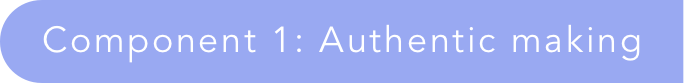
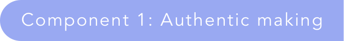
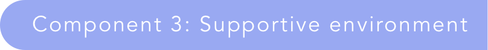
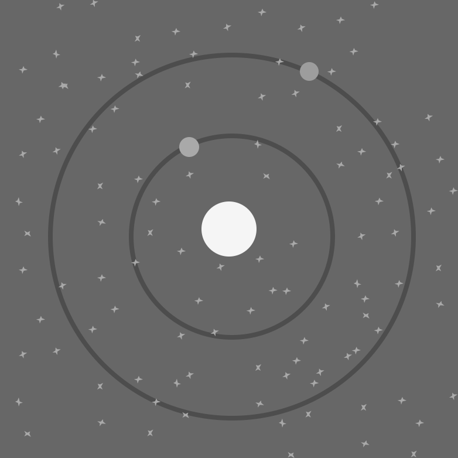
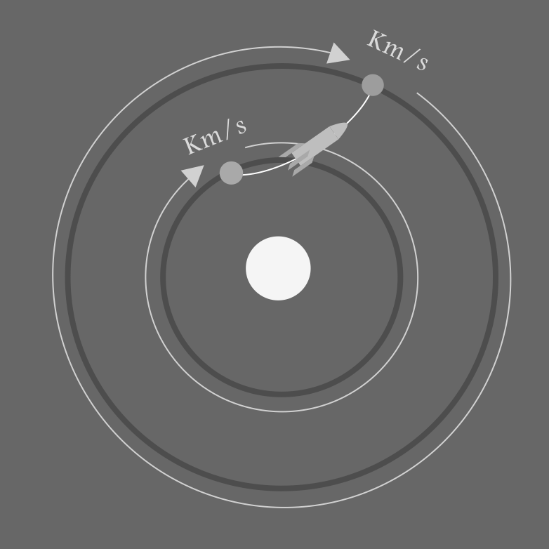

The constructionist perspective is about empowering students to form their own conclusions by creatively experimenting and making objects while in a social medium. In such an environment, a teacher acts more as a guide and mentor, helping students understand hands-on while they pursue their goals. What this learning theory takes advantage of is personal relevance. In this "learn-by-you-making context," students are able to participate in an action that directly relates to their core motivations. A result of such a connection: students can experience high engagement and activity while learning.
A stark example is that of an art class, where students invest their time and attention to carve and shape forms however they fancy. The opposite is that of a traditional math class, where unitized problems are done (or not done) in succession; such work is not often associated with high student investment or creative processes [2]. The purpose is not to turn math into art, but rather to see how construction themed work can be undertaken in math. This is exemplified by a student (5th grade) that programmed a series of graphics in a software program called LogoWriter. The student explained that he had to build angles and curvatures to make his work “graceful,” but it also consequently became an activity of high interest that impacted the learning outcomes.

The view of education from a student's perspective can fundamentally shift just how much effort that student invests. Along with constructionism, most learning theories address how to motivate and engage students for a reason: in traditional learning, students are not investing themselves. The advantage of constructionism is that the student becomes an important member in whatever they are learning. Students are actively working to understand themselves and what they know, with the support of teachers and other students. This learning theory replaces the “teach at” mentality to an “assist to understand” model [2]. An implication of this theory is that the making of knowledge tends to be collaborative and results in students practicing epistemological pluralism (i.e., there is more than one way to accomplish and demonstrate learning).
 

Students need to dive into situations where they can make and test their understandings. The activity design should close the distance between “teaching theory” and “practicing theory.” By letting students become one with the content under study, they can have a powerful and connected learning experience. The activity needs to: (1) test students ideas, (2) allow and highlight alternate pathways, and (3) adjust, stretch and expand their understandings [2]. The root design is not necessarily that students produce some artifact, but rather how they are allowed to make and produce the artifact. If the student is not actively testing their current undestandings, then they are not "making" but following steps.
There are many cases in traditional education where students “make” things: presentations, papers, posters, models, worksheets, and so on. What constructionism idolizes is the underlying reason why students are making—the audience or purpose. One strong purpose can be making for the student's own interest: they are making it for themselves. For example, when building and programming a robotic vehicle with LEGO, a student might run into a mistake (i.e. a bug) where the vehicle vibrates across the ground instead of rolling with wheels [3]. The student could decide to use the buggy vibration as the movement mechanism. The nature of the purpose and audience helps the student direct their learning to align with their perspective, rather than to a stifling or artificial purpose.
However, internal purpose is not the only way to establish a strong conviction. A similar building project may frame the work as to solve a larger problem, perhaps to make the most efficient vehicle for a race. In higher education, students who participate in building solar vehicles or fuel efficient race cars demonstrate making for an external audience or purpose—engineering feats in automotive design or competition for social reward and recognition. A final form of an external audience/purpose may involve interacting with experts during class learning: learning about cooking when a chef comes to teach baking, modeling systems after a nurse comes to discuss healthcare, making a game after talking with designers and programmers [1]. The objective of this component is to connect what students are making to a real and authentic purpose, and overcome the isolated state of learning contexts in traditional learning [2].
Students need the right support while they journey through a making experience. Feedback is a critical aspect to success in their endeavors. The feedback can come from peers who help students reflect on their understandings, as well as guiding directions from an instructor. The timing and amount of the feedback needs to support the student as they hit difficulties and overcome challenges.
Having concrete learning goals can also help the student direct their efforts. While the intent is not to impose a learning goal on a student's perspective, the approaches available in the learning environment should help a student understand how to move forward with their work. In the example above with LEGO, some students built traditional vehicles while others built moving sculptures [3]. However, each student was able to begin from a “region of comfort” and explore how their interest met the learning goals of the LEGO activity.
The final support is establishing a design that values literacy of facts. The idea is that a student can speak in the language of the domain; applying and using knowledge in a meaningful way. If students spend time memorizing facts for evaluation, it can (1) undermine their abilities to retrieve knowledge in the future and (2) provide a weaker base of understanding for future learning.

When a student makes, it is crucial that they are building on their knowledge and challenging their current ways of knowing. So if the task is to make a solar system, there is little value in learning how to make spherical objects. The student should work to understand how a solar system functions, or how to make interesting configurings that might exist in the universe. In authentic making, there is something at risk, the chance that what the student makes fails to represent some complex domain of knowledge. The power is in when the thing made connects to this domain of knowledge; the student learns vicariously through their creation as it reveals the underlying relationships of that domain.
With a real thing to make and learn from, students need that rich reason why they are making in the first place. Perhaps they are asked to plan an exploration in space, or they are curious about space exploration intrinsically. The making of something in this "space explorer" context needs to follow certain rules in order to achieve a successful mission, which relates to many professions in society (e.g., aerodynamics, NASA, innovation in technonlogy, etc.). The purpose can also be rooted in being able to make and understand solar sytems (i.e., astrophysics and astronomy). In this latter purpose, the focus can be on documenting and reporting phenomena in a workbook, or discussing with experts their developing knowledge.
In such open learning experiences, students will need some help to stay on track and challenge their knowledge to make progress. This kind of support can come from the experience itself or from peers and instructors. The purpose of this support is enable the student to transition from basic understandings to being able to apply complex actions in the domain. So in line with a mission of space exploration, a student could be challenged and supported to understand velocities and flight paths in order to move from planet to planet—functional knowledge.
References
1. Khoo, E. G., & Bonk, C. J. (2014). Adding some TEC-VARIETY: 100+ activities for motivating and retaining learners online. Open World Books.
2. Papert, S., & Harel, I. (1991). Situating constructionism. Constructionism, 36(2), 1-11.
3. Resnick, M., & Ocko, S. (1990). LEGO/logo--learning through and about design. Cambridge, MA: Epistemology and Learning Group, MIT Media Laboratory.


Designed and Developed by Nicholas Persa